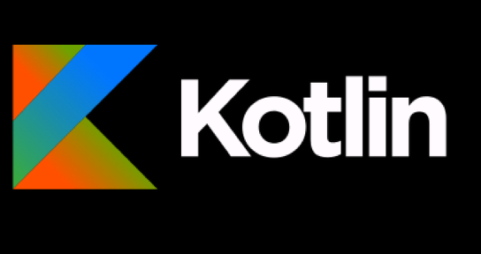

Android Part
kotlin의 기본 문법을 숙지하고 안드로이드 기초와 UI 기초를 학습합니다.
학습한 내용을 바탕으로 간단한 어플리케이션을 제작합니다.
어플리케이션을 제작하는 과정에서 필요하다면 협업 능력을 증진합니다.

IntelliJ IDEA의 개발사 JetBrains에서 2011년에 공개한 오픈 소스
프로그래밍 언어입니다.
자바가상머신(JVM) 기반의 언어로 자바와 유사하지만 보다 간결한 문법으로 더욱 다양한
기능을 제공합니다.
상기의 장점으로 인해 구글, 카카오를 위시한 여러 기업들이 Kotlin을 개발 언어로 채택했습니다.
Curriculum

Vision
-
성장
-
혁신
-
간결성